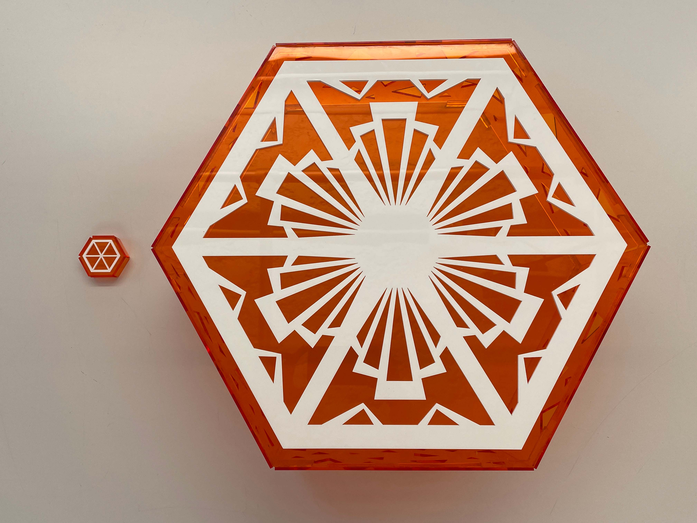
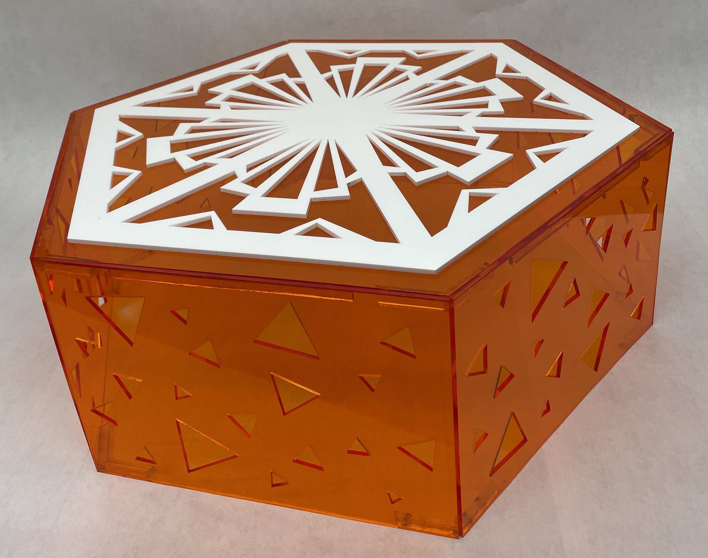
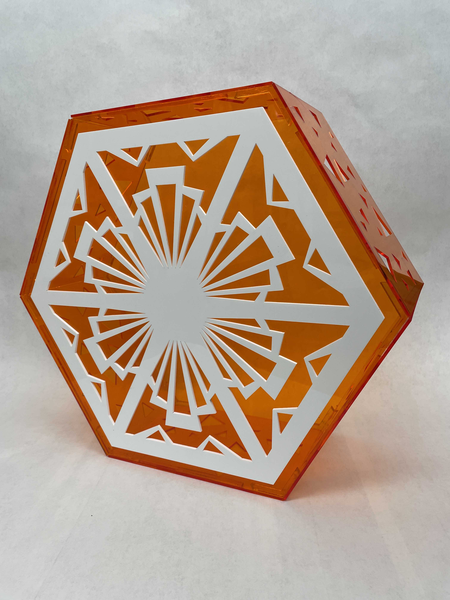
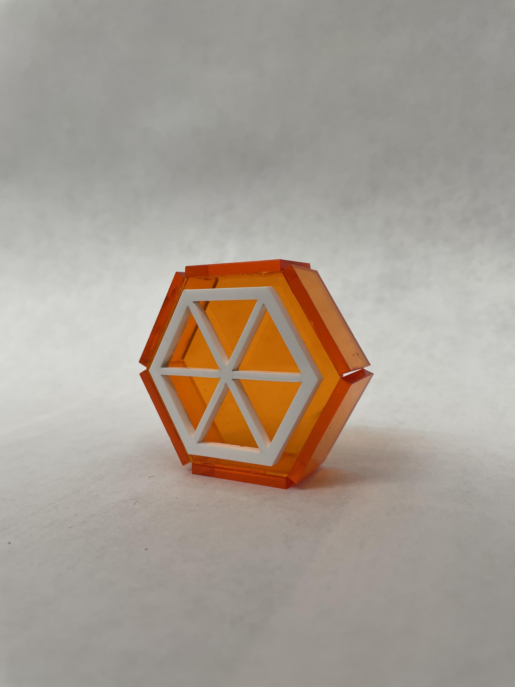

ORANGES
One big (20" x 17.3" x 7") and one small (2.2" x 1.9" x 0.7") acrylic hexagonal prism inspired by an orange cross section.
- Designed on Adobe Illustrator and cut using a laser cutter
- Made with acrylic and acrylic cement



